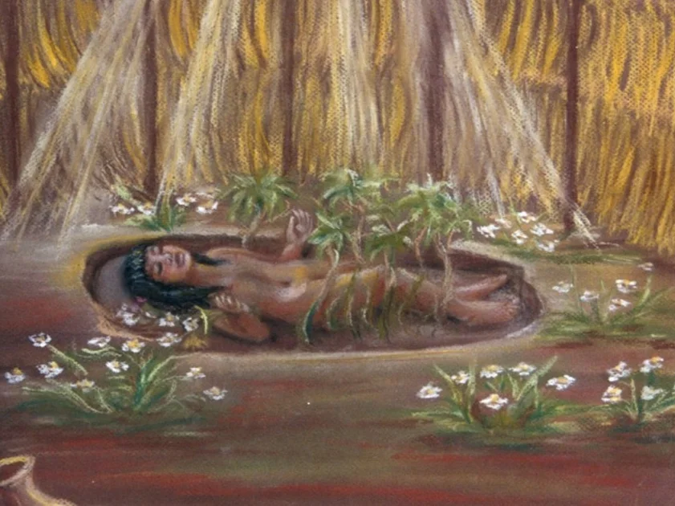

Ola! Ser humano/humana, aqui quem vos fala é Samuel de 3ºRedes-B, estou produzindo este site em homenagem ao dia do indigina comemorado em 19 de abril.
Sim, eu sei, passou bastante tempo da data que era para ser públicado, todavia, aconteceu imprevistos e pelo o que parace teremos que apresentar este trabalho dia 14/05/2024, numa terça-feira! então caso você não tenha visto as apresentações da nossa sala, este site é sua solução com finalidade de obviamente, aprender cada vez mais sobre assuntos interessantes.
A história da culinária indiana remonta à antiga civilização do Vale do Indo, onde os primeiros habitantes cultivavam grãos, praticavam a agricultura e desenvolveram técnicas culinárias rudimentares. O clima diversificado da região, que vai do tropical profundo ao alpino, também ajudou a ampliar consideravelmente o conjunto de ingredientes disponíveis para as muitas escolas de culinária da Índia. A cultura védica moldou ainda mais a comida indiana, enfatizando o uso de especiarias e ervas para fins medicinais e aromatizantes.
A culinária brasileira é fortemente influenciada pela colonização portuguesa do século 16, pelos escravos trazidos da África e pelos povos indígenas. A cultura e as tradições dos colonos se misturaram com a cultura indígena brasileira para criar o caldeirão que vemos hoje. Os nativos do Brasil eram caçadores-coletores cuja dieta continha peixes, carne e ingredientes colhidos na terra. Os alimentos eram cozidos e conservados por meio de diversos métodos e também eram importantes em rituais e cerimônias culturais e espirituais.
No coração da floresta amazônica, o Estado do Pará, pouco afetado pela colonização, manteve sua culinária tradicional. A gastronomia paraense é composta por ingredientes fornecidos pelo rio e pela mata circundante. A gastronomia deste vasto território, embora com alguma variação local, encontra uma identidade comum numa mistura de ingredientes e técnicas decorrentes da interação entre os colonos portugueses e os povos indígenas.
>História da macaxeira e receita
A macaxeira, também conhecida como mandioca, é um alimento fundamental na cultura indígena brasileira e tem uma história rica e fascinante.
Acredita-se que a macaxeira tenha sido cultivada e consumida na América do Sul há mais de 10 mil anos, com vestígios de seu cultivo encontrados em sítios arqueológicos na região amazônica. Os povos indígenas foram os primeiros a domesticar a planta e a utilizar suas raízes como alimento básico.
A mandioca está presente na culinária brasileira desde antes da chegada dos portugueses ao país em 1500. A relação desse tubérculo com os povos originários vai além da alimentação. Ela está no prato, mas também no folclore e nos mitos dos povos indígenas do Brasil.
Um dos mitos mais populares é o dos povos tupis, que agora faz parte do folclore brasileiro. Segundo a lenda, Mani, uma menina indígena de pele branca, morreu e foi enterrada em uma oca por seus pais. Durante alguns dias, a terra permaneceu úmida devido às lágrimas daqueles que choravam no local com saudades da menina. Para a surpresa de todos, tempos depois, surgiu uma plantinha no local. Ela foi batizada como ‘Manioca’, que na língua tupi-guarani significa “casa de Mani”.

Os indígenas da América do Sul também venceram um desafio importante: a toxicidade da planta. Eles conseguiram transformar essa raiz, que é potencialmente venenosa, ainda mais quando consumida crua, em um alimento básico de sua dieta.
Portanto, a história da macaxeira nos ajuda a entender também como o território nomeado pelos povos tupi-guarani como ‘Pindorama’ tornou-se o Brasil que conhecemos hoje.
Veja abaixo a receita de macaxeira:
>História do bolo de mandioca e receita
O bolo de mandioca é uma iguaria da culinária brasileira com origem indígena. A receita está relacionada ao cultivo da mandioca na bacia tropical do Rio Amazonas. A mandioca era cultivada por muitas tribos no Brasil. Quando os colonizadores portugueses chegaram ao país, eles logo perceberam que a mandioca era um alimento importante entre os nativos graças ao seu farto valor nutricional.
A lenda da mandioca conta a história de uma mulher tupi que teve um bebezinho, uma linda e saudável indiazinha chamada Mani. Mani tinha a pele bem branquinha e era cheia de vida, contagiando toda tribo com sua alegria. Certo dia, Mani ficou muito doente e, infelizmente, veio a falecer. Seguindo a tradição tupi, Mani foi enterrada na oca da família. Alguns dias depois, começou a nascer na oca uma planta de raiz marrom por fora e bem branquinha por dentro, assim como a pele da menina. A planta ganhou o nome de Maniva, em homenagem à garota, e a raiz recebeu o nome de Mani Oca, que com o tempo se tornou a mandioca como conhecemos.
O bolo de mandioca é uma das várias receitas icônicas feitas com mandioca. Ele é muito consumido no nordeste e no norte do Brasil, e tem uma massa consistente e bem gostosa, com uma textura única.
Veja abaixo a receita de bolo de mandioca:
>História do "beiju" e receita
O Beiju é uma iguaria tipicamente brasileira, de origem indígena. A origem do Beiju remonta aos tempos pré-colombianos, quando a mandioca era cultivada pelos povos indígenas da América do Sul. A planta era uma das principais fontes de alimento dessas comunidades, devido à sua facilidade de cultivo e alto valor nutricional.
O Beiju é feito com a tapioca (fécula extraída da mandioca, usualmente granulada), que ao ser espalhada em uma chapa ou frigideira aquecida coagula-se e vira um tipo de panqueca ou crepe seco. O recheio varia, mas o mais comum é feito com coco ou queijo coalho. É um quitute muito popular no Nordeste e Norte do Brasil.
Os povos tupi-guaranis, que ocupavam a faixa litoral leste do território brasileiro desde o sul até o norte, foram os responsáveis pelo domínio comestível da mandioca. Produzida sob o sistema da agricultura de subsistência, a mandioca era a base da alimentação no Brasil pré-colonial.
Pouco após os primeiros anos do descobrimento, os colonizadores portugueses na Capitania de Pernambuco descobriram que a tapioca servia como bom substituto para o pão. Na cidade de Olinda, se consumia intensamente o beiju, a farinha e a tapioca (goma) extraídos da mandioca, desde o século XVI com a criação da Casa de Farinha em Itamaracá.
Os indígenas brasileiros faziam vários tipos de beiju: o beiju simples é um bolo de massa fresca, úmida, passado pela urupema (peneira de fibras vegetais) para formar grumos que, devido ao calor, ficam ligados; o beiju-ticanga, feito de massa de mandioca mole e seca ao sol; o beijuaço, redondo, feito como o beiju-ticanga, mas seco no forno.
Veja abaixo a receita de Beiju:
>História da "Farofa de banana" e receita
A Farofa de Banana é um prato tipicamente brasileiro, com origens na culinária indígena. A origem da Farofa de Banana remonta a mais de 150 anos, durante o período do Império Brasileiro, quando o Brasil era governado por Dom Pedro II.
A Farofa de Banana surgiu durante a Guerra do Paraguai, no século XIX, entre os anos de 1864 a 1870. Durante esse conflito, o estado do Mato Grosso, onde a cidade de Cuiabá está localizada, foi isolado do resto do Brasil devido ao fechamento da bacia do rio Paraná pela marinha brasileira. Isso resultou em uma escassez de alimentos na região, levando os habitantes a se alimentarem com a produção de alimentos locais.
Naquela época, o estado do Mato Grosso produzia muitas bananas e mandioca. Assim, a Farofa de Banana surgiu da necessidade de utilizar esses ingredientes disponíveis localmente. A farofa é feita com bananas-da-terra maduras, farinha de mandioca e temperos locais, resultando em uma mistura irresistível de sabores doces e salgados.
Hoje, a Farofa de Banana é um prato muito apreciado e a demanda por esse alimento aumentou tanto que existe até uma fábrica especializada na produção artesanal da deliciosa Farofa de Banana em Rondonópolis, uma cidade localizada a mais de 200 quilômetros da capital Cuiabá.
Veja abaixo a receita de Farofa de banana:
>História da "Pacoça" e receita
A Paçoca é um doce típico brasileiro, com origens na culinária indígena. A origem da Paçoca remonta aos tempos dos povos indígenas que habitavam as terras brasileiras antes da chegada dos portugueses. Eles produziam uma mistura de farinha de mandioca e carne moída, que era assada em fogo baixo.
Com a chegada dos portugueses, a receita foi adaptada e o amendoim foi adicionado à mistura. Assim surgiu a Paçoca que conhecemos hoje, feita com amendoim torrado e moído, açúcar e sal.
No século XVIII, a Paçoca começou a ser produzida em larga escala com a chegada dos portugueses ao Brasil. Na época colonial, a Paçoca era considerada um alimento de baixo custo e era muito consumida pelos escravos.
Com o tempo, a Paçoca se popularizou em todo o país e ganhou diversas variações, como a paçoquinha de rolha e a Paçoca de amendoim com chocolate. Atualmente, a Paçoca é um doce muito apreciado pelos brasileiros e é consumida em diversas ocasiões, como festas juninas e como sobremesa. Além disso, a Paçoca também é utilizada na culinária para dar sabor a outros pratos, como bolos e sorvetes.
Veja abaixo a receita de Paçoca de amendoim:
>História do "Bolo de milho" e receita
A história do bolo de milho é fascinante e remonta aos tempos pré-coloniais do Brasil. Os índios já utilizavam o milho em diversas preparações culinárias, incluindo bolos e pães.
Com a chegada dos colonizadores portugueses, a receita foi aprimorada com a adição de ingredientes como açúcar e ovos. Acredita-se que o bolo de milho tenha sido uma das primeiras sobremesas feitas no Brasil, e que tenha sido criado pelos índios que já utilizavam o milho em sua alimentação.
O bolo de milho é um prato típico da culinária brasileira e tem origem indígena, sendo consumido pelos povos nativos antes mesmo da chegada dos colonizadores portugueses. Com a colonização, o bolo de milho se popularizou ainda mais e passou a ser consumido em todo o país.
Existem diversas variações da receita, com ingredientes como queijo, coco e leite condensado. O bolo de milho é um alimento rico em carboidratos e fibras, sendo uma opção saudável para o café da manhã ou lanche da tarde. Além disso, é uma ótima opção para quem tem intolerância ao glúten, já que pode ser feito sem farinha de trigo.
O bolo de milho é uma tradição cultural brasileira que deve ser valorizada e preservada. Sua história e evolução refletem a riqueza e diversidade da cultura do país.
Veja abaixo a receita de Bolo de milho:
>História da "Tapioca" e receita
A tapioca é um alimento de origem indígena, feito a partir da fécula extraída da mandioca, uma planta nativa da América do Sul. Os índios já consumiam a tapioca em suas tribos muito antes da chegada dos colonizadores portugueses.
Nas primeiras décadas após o descobrimento do Brasil, viajantes estrangeiros já registravam a existência dos beijus, preparados pelos índios com a goma da mandioca. Esses bolos redondos, regados com mel, eram consumidos logo pela manhã e ao longo do dia.
Com a chegada dos colonizadores portugueses, a tapioca se popularizou no Brasil e passou a ser consumida com açúcar e coco ralado. A tapioca era consumida pelos índios como uma espécie de pão, feita a partir da mandioca.
Nos anos 80, a tapioca ganhou destaque como um alimento saudável e sem glúten, sendo utilizada em diversas receitas fitness. Atualmente, a tapioca é consumida em todo o mundo e pode ser encontrada em diversas variações, como a tapioca recheada e a crepioca.
A história da tapioca é um exemplo fascinante da riqueza e diversidade da cultura brasileira, refletindo a influência indígena na culinária do país.


 O bolo de milho é um prato típico da culinária brasileira e tem origem indígena, sendo consumido pelos povos nativos antes mesmo da chegada dos colonizadores portugueses. Com a colonização, o bolo de milho se popularizou ainda mais e passou a ser consumido em todo o país.
O bolo de milho é um prato típico da culinária brasileira e tem origem indígena, sendo consumido pelos povos nativos antes mesmo da chegada dos colonizadores portugueses. Com a colonização, o bolo de milho se popularizou ainda mais e passou a ser consumido em todo o país.